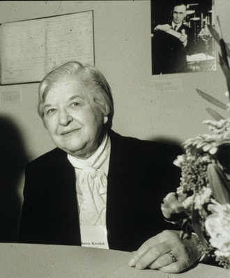

Date
Stephanie Louise Kwolek (31 iulie 1923 - 18 iunie 2014) a fost un chimist american care este cunoscut pentru inventarea Kevlar . Avea moștenire poloneză, iar cariera sa la compania DuPont a cuprins mai mult de 40 de ani. Ea a descoperit fibra sintetica de o rezistență și o rigiditate excepționale: poli-parafenilen tereftalamidă.
Pentru descoperirea ei, Kwolek a primit medalia Lavoisier a companiei DuPont pentru realizări tehnice deosebite. În august 2019, ea a fost singura angajată care a primit această onoare. În 1995 a devenit a patra femeie care a fost adăugată la Sala Națională a Famei Inventatorilor .
Kwolek a murit la vârsta de 90 de ani la 18 iunie 2014.
